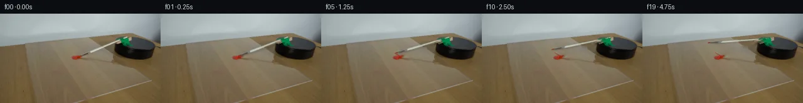

![首帧]()

Round 00
2026-11-05T14:17:25.029236+00:00像素候选变化代码 +280/−0inspection 更新
pixels f4fdb25cf227e742 · code dbb011a891b4f30b
查看本轮 generate.py 真实 diff
--- previous/generate.py +++ current/generate.py @@ -0,0 +1,280 @@ +"""Deterministic local pixel continuation of the supplied scientific setup. + +No image viewing, external models, or rendering engines are used. A matted +source brush is rotated in a foreshortened plane, with analytic wet paint and +soft shadow layers. Run from this workspace with `python generate.py`. +""" +from pathlib import Path +import json +import shutil + +import cv2 +import numpy as np +from PIL import Image, ImageDraw +from scipy.ndimage import gaussian_filter + +from artifact_io import save + + +ROOT = Path(__file__).resolve().parent +SCALE = 4 +PIVOT = np.array([195.5, 40.6], dtype=np.float64) +AXIS = np.array([-1.0, 0.4], dtype=np.float64) +AXIS /= np.linalg.norm(AXIS) +NORMAL = np.array([-AXIS[1], AXIS[0]]) * -1.0 +DEPTH_SCALE = 0.44 +TIP = np.array([126.0, 68.4], dtype=np.float64) + + +def smoothstep(lo, hi, a): + x = np.clip((a - lo) / (hi - lo), 0.0, 1.0) + return x * x * (3.0 - 2.0 * x) + + +def pose(angle_degrees): + """Clockwise rotation in coordinates whose positive y projects downward.""" + theta = np.deg2rad(angle_degrees) + c, s = np.cos(theta), np.sin(theta) + projection = np.diag([1.0, DEPTH_SCALE]) + rot = np.array([[c, -s], [s, c]]) + linear = projection @ rot @ np.linalg.inv(projection) + return np.column_stack((linear, PIVOT - linear @ PIVOT)) + + +def point_at(angle_degrees, point=TIP): + m = pose(angle_degrees) + return m[:, :2] @ point + m[:, 2] + + +def up(a): + return cv2.resize(a, (256 * SCALE, 144 * SCALE), interpolation=cv2.INTER_LINEAR) + + +def down(a): + return cv2.resize(a, (256, 144), interpolation=cv2.INTER_AREA) + + +def warp_hi(a, matrix): + # OpenCV's pixel centers need the half-pixel correction after resizing. + m = matrix.copy() + center_offset = np.array([(SCALE - 1) / 2.0] * 2) + m[:, 2] = m[:, 2] * SCALE + center_offset - m[:, :2] @ center_offset + return cv2.warpAffine(a, m, (256 * SCALE, 144 * SCALE), + flags=cv2.INTER_LINEAR, borderMode=cv2.BORDER_CONSTANT) + + +def extract_brush(original): + """Recover a photographic shaft and ferrule, and a small bristle tip.""" + yy, xx = np.mgrid[:144, :256] + relative = np.stack((xx - PIVOT[0], yy - PIVOT[1]), axis=-1) + axial = relative @ AXIS + normal = relative @ NORMAL + r, g, b = original.transpose(2, 0, 1) + green = (g > 1.25 * r) & (g > 1.25 * b) & (g > 40) + green &= (xx >= 183) & (xx <= 214) & (yy >= 35) & (yy <= 55) + paint = (r > 1.3 * g) & (r > 1.3 * b) & (r > 90) + paint &= (xx >= 112) & (xx <= 131) & (yy >= 66) & (yy <= 75) + + # Width follows the original pale handle, then the narrow metal/bristles. + radius = np.where(axial < 55.5, 2.85, + np.where(axial < 66.0, 2.45, 1.7)) + alpha = 1.0 - smoothstep(radius - 1.05, radius + 0.25, np.abs(normal + 0.10)) + alpha *= smoothstep(-9.3, -7.1, axial) + alpha *= 1.0 - smoothstep(71.0, 74.5, axial) + alpha[green | paint] = 0.0 + + repair_mask = ((axial > -9.7) & (axial < 73.5) + & (np.abs(normal + 0.1) < radius + 0.85) … diff truncated; 193 more lines …